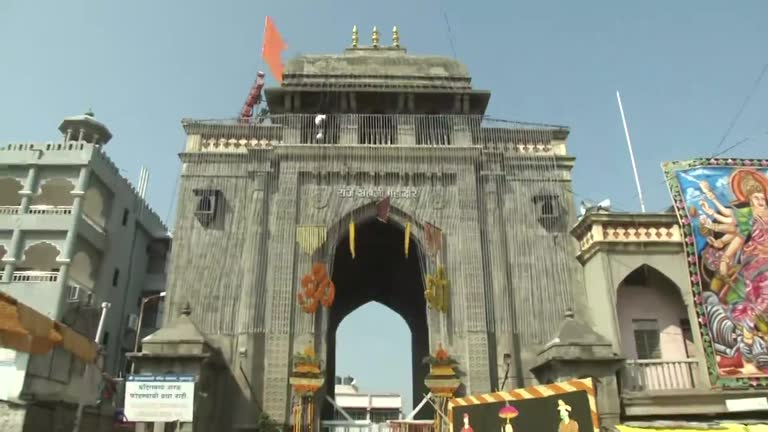
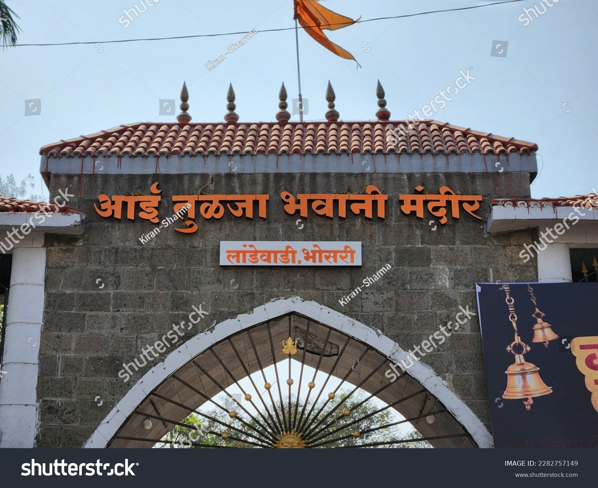

Tulja Bhavani Temple


Tulja Bhavani Temple
Shree Tulaja Bhavani Temple (Marathi: श्री क्षेत्र तुळजा भवानि देवस्थानम्), a 12th century CE Hindu temple dedicated to goddess Bhavani built in 12th century CE by Maratha Mahamandaleshwara Māradadeva of the Kadamb dynasty, considered as one of the 51 Shakti Pithas, is located on the banks of Mandakini River and Bori Dam in Yamunachala Hill of Balaghat Range of Tuljapur, 45 km northeast of Solapur, in Dharashiv district of Maharashtra in India.
This Tuljapur Bhavani temple, along with Renuka temple at Mahur 330 km northeast of Tuljapur, Mahalaxmi temple at Kolhapur 275 southwest of Tuljapur, and Saptashringi temple at Vani 375 northwest of Tuljapur, forms the four great Shaktipitha in Maharashtra.
There are other temples of Tulja Bhavani in India, Chittorgarh Fort Tulja Bhavani Temple at Chittorgarh built in 1537–1540 960 km north of Tuljapur, and the Patnakuva Tulja Bhavani Temple at Patnakuva village of Gandhinagar district in Gujarat 1,000 km northwest of Tuljapur.
Goddess Bhavani at Tuljapur
Etymology and other names of Bhavani
"Bhavani" literally translates to "giver of life", meaning the power of nature or the source of creative energy. She is considered to be a mother goddess who provides to her devotees and also plays the role of dispensing justice by killing Asuras (demons).
The Goddess "Tulja Bhavani" is also known as Tulaja, Turaja, Tvarita and Amba.
Goddess Bhavani the incarnation of Goddess Durga
Bhavani is a form of the goddess Durga who is worshipped in Maharashtra, Gujarat, Rajasthan, Rajasthan, entire North India, Northern Karnataka, and Nepal, Andhra Pradesh.
Skanda Purana legend of Goddess Bhavani
One of the earliest legend related to the Goddess Bhavani is mentioned in the Skanda Purana (8th century or earlier) as it finds a mention in that holy script. The legend involves a demon, Madhu-Kaitabh, who was wreaking havoc upon both the gods and humans. Unable to find any solution, they turned to Lord Brahma for help, who advised them to turn to the Goddess Shakti.
She took up the form of a destroyer, and powered by the other Sapta Matas, namely Brahmani who manifested from Brahma, Chamunda from Chandi, Kaumari from Kartikeya, Indrani from Indra, Maheshvari from Shiva, Vaishnavi from Vishnu, and Varahi from Varaha, vanquished the demon and restored peace.
Legend also states that Bhavani finished another demon that had taken up the disguise of a buffalo (Mahisha), and took shelter on the Yamunachala Hill which is part of Balaghat mountain range.
According to this legend, there was a sage named Kardama with a consort named "Anubhuthi" with their infant child, in this area. After sage Bhavani's death, his wife "Anubhuthi" performed a penance for goddess in the name of Bhavani on the Yamunachala hillock on the banks of the river Mandakini River (presently known as the Bori River) to look after her child.
While performing the penance two [Rakshasa]] (demon) jointly known as Madhu-Kaitabha (also called "Kukur") tried to disturb her penance during which the Goddess Bhavani came to the aid of "Anubuti" and killed the demon "Kukur". From that day onwards, the Goddess Bhavani came to be known a Tulaja Bhavani.
The goddess on the prayer of her favourite devotee settled in Tuljapur on the Yamunachala Hill of Balaghat Range, where the temple was built in 12th century. Since then the Mother Goddess came to be called as Bhavani of Tuljapur or Tulja Bhavani.
Goddess Bhavani as Kuldevi of Maratha clans
The Goddess is kuldevi (clan goddess) for many Maratha clans of Maharashtra.[5] The Goddess is either revered by or is the Family Deity for many other Marathi castes at different levels of social hierarchy
The Goddess is either revered by or is the Family Deity for many castes including Kadam, Bhope, Dhangar, Mali, Deshastha Brahmin, Bharbhunja, Burud, Kolhati, Gavli, Jogi, Johar, San Teli, Gavandi, Pangul, Sonar, Lonari, Kasar, Bhute, Kalar, Aagri and Koli, Bhavsar, etc.
Temple complex
12th century Bhavani Bhavani main temple
Temple history
Tulja Bhavani Temple here was built in the 12th century CE. The Goddess is said to be swayambhu` ("self-manifested" or "that which is created by its own accord").[a] There is a "yagna kund" (holy fire pit) in front of this temple.
Idol of Goddess Bhavani in the temple
The idol of Goddess Tulja Bhawani, three-foot tall and made of granite, is with eight arms holding weapons, and bearing the head of the slain demon Mahishasura. Devotees bow in devotion upon seeing the finely shaped, tandla (idol) of the self-manifested goddess, which is adorned with vermilion, ornaments, and decorations.